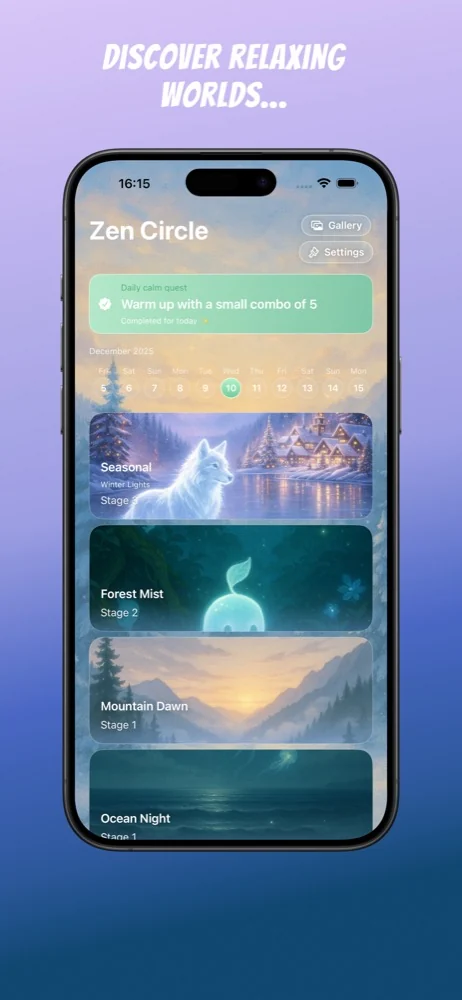
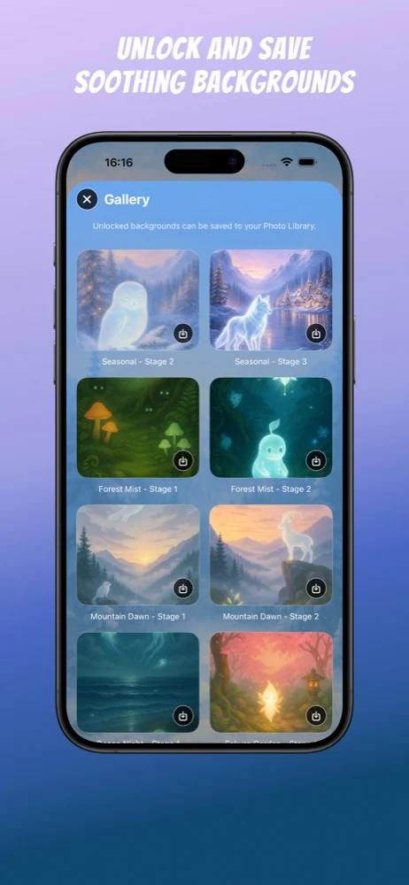
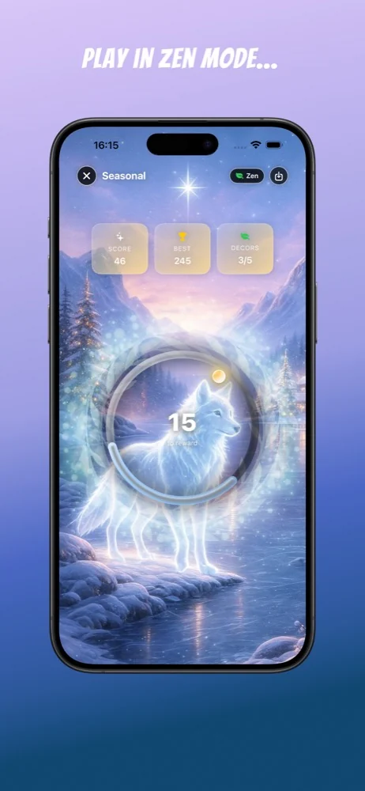
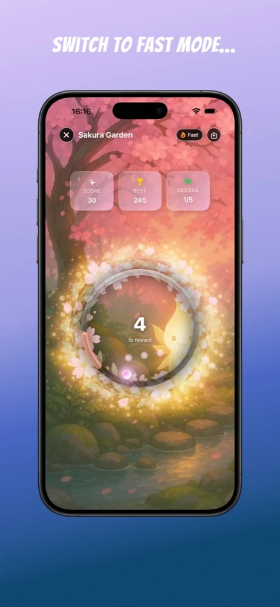

App Store
Pas encore de note publique affichée.
Voir la fiche et les avisRythme et détente · iOS
Touchez l’écran lorsque le cercle atteint l’arc lumineux, enchaînez les combos et découvrez les décors illustrés.
Découvrir les détails ↓Choisissez le mode Zen, plus doux, ou le mode Fast, plus rapide. Explorez 10 mondes, dont cinq gratuits, avec un achat Premium unique optionnel. Un jeu de rythme pour iPhone et iPad.




Pas encore de note publique affichée.
Voir la fiche et les avisNotes affichées séparément par boutique. Elles peuvent varier selon le pays et évoluer.
Consultez la fiche officielle pour les disponibilités, prix et langues du jeu.